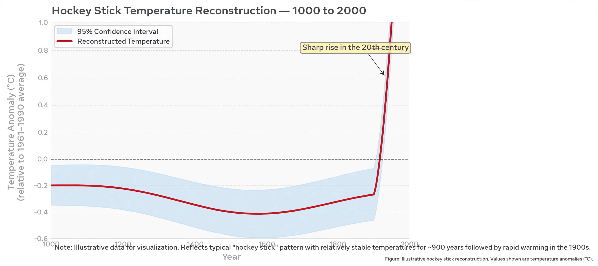

Michael E. Mann
| Michael E. Mann | |
|---|---|
| Born | 1965, Amherst, Massachusetts |
| Field | Climatology, paleoclimatology |
| Known for | Hockey stick graph (MBH98/99) |

Michael Evan Mann (born 1965) is an American climatologist and geophysicist known for reconstructions of past temperatures, in particular the 'hockey stick' graph of Northern Hemisphere temperatures over the past millennium, which became an icon of {L('Global_warming')} science and of the controversies around it.
Mann has directed earth-system science centres at Penn State and the University of Pennsylvania and is a prominent public communicator on climate change.
The hockey stick
With Raymond Bradley and Malcolm Hughes, Mann published reconstructions (1998, 1999) using tree rings, ice cores and other proxies, indicating that late-20th-century warmth in the Northern Hemisphere was likely unprecedented in at least 600, then 1,000, years. Featured prominently in the {L('IPCC','IPCC')}'s 2001 report, the gently varying 'shaft' and sharply rising 'blade' became the most reproduced — and most attacked — image in climate science.
Subsequent reconstructions by many independent groups, and reviews by the US National Academies and others, have broadly confirmed the pattern, while legitimate debate continues over details of individual proxies and statistics.
Controversy and communication
Mann's emails were among those released in the 2009 'Climategate' affair; multiple investigations found no scientific misconduct. He has been a target of sustained political and legal pressure, written books including The Hockey Stick and the Climate Wars (2012) and The New Climate Economy era works, and co-founded the RealClimate blog. His career illustrates how climate science became a public and political battleground.
See also: Global warming · IPCC · Climate change · Keeling Curve